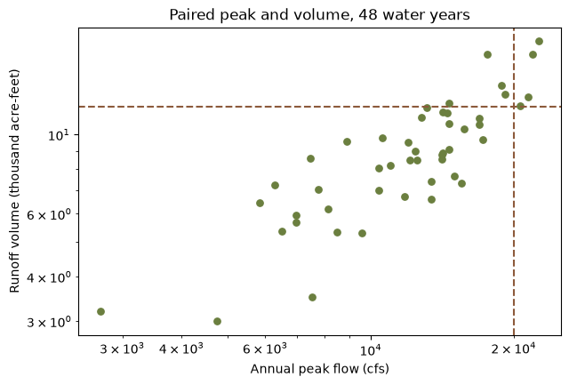
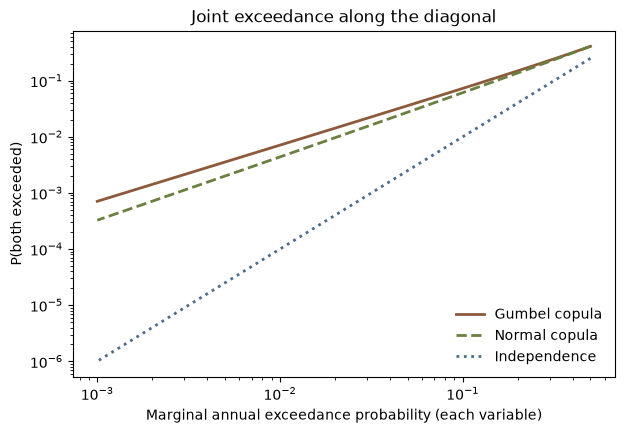
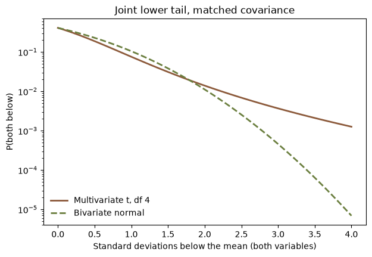

import matplotlib.pyplot as plt
import numpy as np
import pandas as pd
import corehydropy as ch26. Copulas and joint frequency
A reservoir cares about two things at once. The peak inflow sizes the spillway; the runoff volume sizes the storage. Fitting each record separately says how often each is exceeded and says nothing about how often they arrive together. A copula answers that second question: it holds the two marginal distributions fixed and models only the dependence between them.
corehydropy exposes the seven bivariate copulas of the Numerics library through Copula and copula_fit(), and the multivariate distributions through mvdist_normal() and its siblings. This example fits a copula to a paired peak-and-volume record, prices a coincident design event, and checks the answer against the model-based bivariate_analysis() path.
What you’ll learn
- Fit a copula’s dependence parameter three ways: maximum pseudo-likelihood, Kendall’s tau inversion, and inference from margins.
- Read tail dependence, and watch two copulas that fit the body of a sample almost equally well disagree about its joint tail.
- Compute the and-joint exceedance probability of a coincident peak-and-volume event, and set it against the answer independence would give.
- Recover the same probability from a bivariate normal, and cross-check the whole thing against
bivariate_analysis().
Setup
Peak and volume pairs
Forty-eight water years. The peaks are the annual peak-flow record used in example 21 and example 23; the volumes are a companion record written for this example, so the page is self-contained and both languages read exactly the same numbers.
peak = [
6290, 2700, 13100, 16900, 14600, 9600, 7740, 8490, 8130, 12000,
17200, 15000, 12400, 6960, 6500, 5840, 10400, 18800, 21400, 22600,
14200, 11000, 12800, 15700, 4740, 6950, 11800, 12100, 20600, 14600,
14600, 8900, 10600, 14200, 14100, 14100, 12500, 7530, 13400, 17600,
13400, 19200, 16900, 15500, 14500, 21900, 10400, 7460,
]
volume = [
7.21, 3.21, 11.88, 10.70, 9.07, 5.31, 7.04, 5.33, 6.18, 9.54,
9.68, 7.66, 8.99, 5.95, 5.37, 6.45, 7.00, 13.71, 12.75, 18.27,
11.54, 8.19, 11.15, 10.35, 3.00, 5.67, 6.71, 8.47, 12.02, 12.23,
10.71, 9.58, 9.82, 8.90, 8.80, 8.55, 8.48, 3.50, 6.60, 16.79,
7.39, 12.95, 11.09, 7.31, 11.50, 16.79, 8.05, 8.56,
]
print(
f"{len(peak)} water years; peak {min(peak):,} to {max(peak):,} cfs, "
f"volume {min(volume):.2f} to {max(volume):.2f} thousand acre-feet"
)48 water years; peak 2,700 to 22,600 cfs, volume 3.00 to 18.27 thousand acre-feetThe design event this page prices is a 20,000 cfs peak arriving with a 12 thousand acre-foot volume.
q_peak = 20000
q_vol = 12
fig, ax = plt.subplots(figsize=(7, 4.5))
ax.scatter(peak, volume, s=28, color="#6b7f3f")
ax.set_xscale("log")
ax.set_yscale("log")
ax.axvline(q_peak, ls="--", color="#8c5a3b")
ax.axhline(q_vol, ls="--", color="#8c5a3b")
ax.set_xlabel("Annual peak flow (cfs)")
ax.set_ylabel("Runoff volume (thousand acre-feet)")
ax.set_title("Paired peak and volume, 48 water years")
plt.show()
Dependence without marginals
copula_fit(family, x, y, method="mpl") maximizes the pseudo-likelihood. That likelihood is defined on the plotting positions rank / (n + 1) rather than on the data scale, so it never touches the marginal distributions. Pass the raw paired observations: the ranking happens inside the shared C++ core, which is why R and Python fit the same number from the same input.
families = ["Clayton", "Frank", "Gumbel", "Joe", "Normal"]
mpl = {f: ch.copula_fit(f, peak, volume, method="mpl") for f in families}
ranking = pd.DataFrame(
{
"n_parameters": [len(cop.params()) for cop in mpl.values()],
"theta": [cop.theta for cop in mpl.values()],
"pseudo_loglik": [
cop.log_likelihood(peak, volume, method="pseudo") for cop in mpl.values()
],
},
index=families,
)
ranking.sort_values("pseudo_loglik", ascending=False).round(4)| n_parameters | theta | pseudo_loglik | |
|---|---|---|---|
| Normal | 1 | 0.8652 | 30.3702 |
| Gumbel | 1 | 2.8147 | 30.0438 |
| Joe | 1 | 3.5522 | 26.7852 |
| Frank | 1 | 8.6716 | 25.7708 |
| Clayton | 1 | 2.3063 | 22.7077 |
All five carry one dependence parameter and all five are evaluated on the same pseudo observations, so their pseudo log-likelihoods rank them directly. The ranking barely separates the top two: the Normal copula leads, the Gumbel follows, and both stand well clear of the other three. Both are carried forward below, because they turn out to disagree about exactly the part of the sample the design question asks about.
method="tau" inverts Kendall’s tau into the dependence parameter with no likelihood optimization at all. Upstream implements that inversion for Clayton, Gumbel, and AliMikhailHaq only, closed form for the first two and a root solve for the third, so asking any other family for it is an error rather than a silent fallback.
for family in ("Clayton", "Gumbel"):
print(f"{family:<10}{ch.copula_fit(family, peak, volume, method='tau').theta:>10.4f}")
try:
ch.copula_fit("Frank", peak, volume, method="tau")
except Exception as err:
print(err)Clayton 3.4473
Gumbel 2.7237
method 'tau' is not available for 'Frank'; upstream implements SetThetaFromTau for Clayton, Gumbel and AliMikhailHaq onlyInference from margins
Inference from margins fits each marginal by maximum likelihood first, then estimates the copula with those marginals held fixed. Naming a family in margin_x or margin_y is what asks for that first step; under "ifm" an already-parameterized Distribution is attached as given and skips the fit, while method="mle" re-estimates both marginals jointly with the dependence parameter. A named marginal is rejected under "mpl" and "tau", since neither method looks at marginals and the name would come back unfitted.
gumbel = ch.copula_fit("Gumbel", peak, volume, method="ifm",
margin_x="LogNormal", margin_y="LogNormal")
normal = ch.copula_fit("Normal", peak, volume, method="ifm",
margin_x="LogNormal", margin_y="LogNormal")
margins = pd.DataFrame(
[gumbel.margin_x.params, gumbel.margin_y.params],
index=["peak", "volume"], columns=["mu", "sigma"],
)
margins.round(4)| mu | sigma | |
|---|---|---|
| peak | 4.0674 | 0.1868 |
| volume | 0.9278 | 0.1684 |
LogNormal in this library is base 10: the two parameters are the mean and standard deviation of the base-10 logarithm of the variable, the same log space a Bulletin 17C fit reports.
cmp = pd.DataFrame(
{
"theta_mpl": [mpl["Gumbel"].theta, mpl["Normal"].theta],
"theta_ifm": [gumbel.theta, normal.theta],
"ifm_loglik": [
gumbel.log_likelihood(peak, volume, method="ifm"),
normal.log_likelihood(peak, volume, method="ifm"),
],
},
index=["Gumbel", "Normal"],
)
cmp.round(4)| theta_mpl | theta_ifm | ifm_loglik | |
|---|---|---|---|
| Gumbel | 2.8147 | 2.7123 | 29.9005 |
| Normal | 0.8652 | 0.8427 | 29.7183 |
The two estimates of the same parameter differ because they are fitted against different things. The pseudo-likelihood sees only ranks, so no marginal can influence it. Inference from margins sees the fitted marginal CDFs, and any misfit there passes straight into the copula. Both are legitimate; neither is a refinement of the other.
Tail dependence
The tail dependence coefficients are the limiting probability that one variable is extreme given that the other is.
pd.DataFrame(
[gumbel.tail_dependence(), normal.tail_dependence()], index=["Gumbel", "Normal"]
).round(4)| lower | upper | |
|---|---|---|
| Gumbel | 0.0 | 0.7088 |
| Normal | 0.0 | 0.0000 |
Neither has lower tail dependence. In the upper tail they could not be further apart. The Gumbel copula’s coefficient is 2 - 2**(1/theta), positive for every theta above its lower bound of 1, while the Normal copula returns zero for every correlation. Two copulas that scored within a fraction of a log-likelihood unit of each other on the body of the sample make opposite structural claims about its corner.
Pricing a coincident event
Copula.exceedance() returns the and-joint exceedance probability P(U > u, V > v), which the core computes as 1 - u - v + C(u, v), or the union probability 1 - C(u, v) with type="or". Both take non-exceedance probabilities, so run the design thresholds through the fitted marginal CDFs first.
u = gumbel.margin_x.cdf(q_peak)
v = gumbel.margin_y.cdf(q_vol)
joint = pd.DataFrame(
{
"p_and": [
gumbel.exceedance(u, v, "and"),
normal.exceedance(u, v, "and"),
(1 - u) * (1 - v),
]
},
index=["Gumbel copula", "Normal copula", "Independence"],
)
joint["return_period"] = 1 / joint["p_and"]
joint["vs_independence"] = joint["p_and"] / joint.loc["Independence", "p_and"]
print(joint.round(4))
print(
f"peak alone: p = {1 - u:.4f} (1 in {1 / (1 - u):.1f}); "
f"volume alone: p = {1 - v:.4f} (1 in {1 / (1 - v):.1f})"
)
print(f"either one exceeded, Gumbel copula: p = {gumbel.exceedance(u, v, 'or'):.4f}") p_and return_period vs_independence
Gumbel copula 0.0943 10.6022 4.8510
Normal copula 0.0853 11.7188 4.3888
Independence 0.0194 51.4310 1.0000
peak alone: p = 0.1055 (1 in 9.5); volume alone: p = 0.1842 (1 in 5.4)
either one exceeded, Gumbel copula: p = 0.1954Treating the peak and the volume as independent multiplies their two exceedance probabilities and returns 0.0194. The fitted copulas put the same event at 0.0943 under the Gumbel and 0.0853 under the Normal, and the vs_independence column prices the mistake: independence understates how often the two arrive together by a factor of 4.85 or 4.39, depending on the copula. Independence is not the conservative assumption here.
The tail dependence coefficients above are limits, so their effect shows up when both variables are pushed out together. Walk the two thresholds along the diagonal, holding each marginal at the same annual exceedance probability, and the two copulas separate.
aep = np.array([0.2, 0.1, 0.02, 0.01, 0.002])
corner = pd.DataFrame(
{
"marginal_aep": aep,
"gumbel": [gumbel.exceedance(a, a, "and") for a in 1 - aep],
"normal": [normal.exceedance(a, a, "and") for a in 1 - aep],
"independence": aep**2,
}
)
corner["gumbel_over_normal"] = corner["gumbel"] / corner["normal"]
corner.round(6)| marginal_aep | gumbel | normal | independence | gumbel_over_normal | |
|---|---|---|---|---|---|
| 0 | 0.200 | 0.149673 | 0.137121 | 0.040000 | 1.091534 |
| 1 | 0.100 | 0.072808 | 0.061086 | 0.010000 | 1.191897 |
| 2 | 0.020 | 0.014252 | 0.009630 | 0.000400 | 1.479991 |
| 3 | 0.010 | 0.007107 | 0.004381 | 0.000100 | 1.622369 |
| 4 | 0.002 | 0.001418 | 0.000712 | 0.000004 | 1.992958 |
The Gumbel-to-Normal ratio grows from 1.0915 at a 0.2 marginal exceedance probability to 1.9930 at 0.002: upper tail dependence hardly matters in the body of the distribution and nearly doubles the joint probability in its corner. Independence falls away far faster than either.
grid_aep = np.logspace(np.log10(0.5), np.log10(0.001), 60)
g_curve = [gumbel.exceedance(a, a, "and") for a in 1 - grid_aep]
n_curve = [normal.exceedance(a, a, "and") for a in 1 - grid_aep]
fig, ax = plt.subplots(figsize=(7, 4.5))
ax.plot(grid_aep, g_curve, lw=2, color="#8c5a3b", label="Gumbel copula")
ax.plot(grid_aep, n_curve, lw=2, ls="--", color="#6b7f3f", label="Normal copula")
ax.plot(grid_aep, grid_aep**2, lw=2, ls=":", color="#4d6b8a", label="Independence")
ax.set_xscale("log")
ax.set_yscale("log")
ax.set_xlabel("Marginal annual exceedance probability (each variable)")
ax.set_ylabel("P(both exceeded)")
ax.set_title("Joint exceedance along the diagonal")
ax.legend(frameon=False, loc="lower right")
plt.show()
The Normal copula is the bivariate lognormal
A Normal copula with lognormal marginals is a bivariate normal in log space, so the same joint probability is available from mvdist_normal() as a rectangle probability. MultivariateDistribution.interval() returns P(lower <= X <= upper) through the ported Genz algorithm, and the two routes have to agree.
px = normal.margin_x.params
py = normal.margin_y.params
rho = normal.theta
covar = [
[px[1] ** 2, rho * px[1] * py[1]],
[rho * px[1] * py[1], py[1] ** 2],
]
mvn = ch.mvdist_normal(mean=[px[0], py[0]], covariance=covar, seed=20250812)
rect = mvn.interval([np.log10(q_peak), np.log10(q_vol)], [1e6, 1e6])
p_norm_copula = normal.exceedance(u, v, "and")
print(f"Normal copula {p_norm_copula:.15f}")
print(f"MVN rectangle {rect:.15f}")
print(f"relative difference {rect / p_norm_copula - 1:.1e}")Normal copula 0.085332736299363
MVN rectangle 0.085332736299362
relative difference -1.1e-14mvdist_normal() takes a seed because the Genz integrator draws from its own Mersenne Twister. Leave it out and the instance is clock-seeded, so any value that depends on those draws stops being reproducible run to run, let alone across languages. MultivariateDistribution.cdf() avoids the integrator entirely at dimension one and two, where the ported code uses closed forms.
The same object answers the conditional question directly.
cond = mvn.conditional(given=1, values=np.log10(q_peak))
cond_mean = float(cond.mean()[0])
cond_sd = float(np.sqrt(cond.covariance()[0][0]))
p_cond = 1 - ch.Distribution("Normal", [cond_mean, cond_sd]).cdf(np.log10(q_vol))
print(f"log10 volume given a 20,000 cfs peak: mean {cond_mean:.4f}, sd {cond_sd:.4f}")
print(f"P(volume > 12 kaf | peak = 20,000 cfs) = {p_cond:.4f}")log10 volume given a 20,000 cfs peak: mean 1.1052, sd 0.0906
P(volume > 12 kaf | peak = 20,000 cfs) = 0.6129MultivariateDistribution.marginal(), .conditional(), and .interval() are MultivariateNormal methods only; MultivariateStudentT has no upstream counterpart for any of the three.
Cross-check against the model path
bivariate_analysis() reaches the same copula from the other direction. It wraps the two fixed marginals and the copula in a model, estimates the dependence parameter with a Bayesian MCMC, and returns a credible band alongside the point curve.
grid_x = [15000, 20000, 25000]
grid_y = [9, 12, 15]
ba = ch.bivariate_analysis(
"LogNormal", peak, px, "LogNormal", volume, py,
xy_x=grid_x, xy_y=grid_y, copula="Normal",
estimation_method="InferenceFromMargins", sampler="DEMCz",
iterations=1000, output_length=4000, seed=20250812,
number_of_chains=4, thinning_interval=1,
)
map_copula = ch.Copula("Normal", ba["parameters"][0])
gu = [normal.margin_x.cdf(x) for x in grid_x]
gv = [normal.margin_y.cdf(y) for y in grid_y]
at_map = [map_copula.exceedance(a, b, "and") for a, b in zip(gu, gv)]
cross = pd.DataFrame({
"peak": grid_x, "volume": grid_y,
"analysis_curve": ba["mode_curve"],
"analysis_lower": ba["lower_ci"], "analysis_upper": ba["upper_ci"],
"copula_at_map": at_map,
})
print(cross.round(5))
print(f"theta: {normal.theta:.6f} from copula_fit(ifm), "
f"{ba['parameters'][0]:.6f} reported by the analysis") peak volume analysis_curve analysis_lower analysis_upper \
0 15000 9 0.24999 0.23741 0.26039
1 20000 12 0.08362 0.07596 0.09025
2 25000 15 0.02658 0.02305 0.02977
copula_at_map
0 0.25272
1 0.08533
2 0.02739
theta: 0.842690 from copula_fit(ifm), 0.842682 reported by the analysisThe two paths agree on the dependence parameter to four decimal places, and the copula verb’s probability sits inside the analysis’s own credible band at all three ordinates. They are not identical, and the reason is worth knowing: bivariate_analysis() reports the posterior maximum in parameters, but builds its curve at whatever point estimator the underlying Bayesian analysis carries, which defaults to the posterior mean. Evaluating Copula.exceedance() at the reported maximum therefore answers a slightly different question than the curve does.
Beyond the bivariate normal
mvdist_normal() is one of five multivariate families. The other four answer different questions: a Student-t when the joint tail should be heavier than a normal’s, a Dirichlet over fractions that have to sum to one, a Multinomial over counts across those same categories, and a BivariateEmpirical when the joint distribution is read off the sample instead of fitted.
A heavier joint tail
mvdist_student_t(df, location, scale) takes a scale matrix, not a covariance. The covariance is scale * df / (df - 2), and it exists only for df > 2. Setting scale to covar * (df - 2) / df therefore builds a Student-t carrying exactly the covariance the fitted bivariate normal above carries, which is what makes the two comparable.
df = 4
scale_matrix = np.asarray(covar) * (df - 2) / df
mvt = ch.mvdist_student_t(df=df, location=[px[0], py[0]], scale=scale_matrix)
print(
f"df {mvt.params()['df']:g}; scale[0][0] {scale_matrix[0][0]:.8f} -> "
f"covariance[0][0] {mvt.covariance()[0][0]:.8f} (bivariate normal {covar[0][0]:.8f})"
)df 4; scale[0][0] 0.01744606 -> covariance[0][0] 0.03489212 (bivariate normal 0.03489212)Both distributions are centred on the same two log-space means, so walk the two thresholds down together and read MultivariateDistribution.cdf(): the probability of a year that is low in peak and low in volume at once.
centre = np.array([px[0], py[0]])
sd_log = np.array([px[1], py[1]])
low = pd.DataFrame({"sd_below": [1, 2, 3]})
low["normal"] = [mvn.cdf(centre - k * sd_log) for k in low["sd_below"]]
low["student_t"] = [mvt.cdf(centre - k * sd_log) for k in low["sd_below"]]
low["ratio"] = low["student_t"] / low["normal"]
low.round(6)| sd_below | normal | student_t | ratio | |
|---|---|---|---|---|
| 0 | 1 | 0.104527 | 0.075582 | 0.723079 |
| 1 | 2 | 0.011153 | 0.013956 | 1.251349 |
| 2 | 3 | 0.000457 | 0.003682 | 8.049844 |
Same covariance, different shape. One standard deviation below both means the Student-t puts less probability in the joint corner than the normal does, 0.075582 against 0.104527. By three standard deviations below, the ratio has grown to 8.049844. The heavier tail is paid for out of the shoulder.
grid_k = np.linspace(0, 4, 60)
t_low = [mvt.cdf(centre - k * sd_log) for k in grid_k]
n_low = [mvn.cdf(centre - k * sd_log) for k in grid_k]
fig, ax = plt.subplots(figsize=(7, 4.5))
ax.plot(grid_k, t_low, lw=2, color="#8c5a3b", label="Multivariate t, df 4")
ax.plot(grid_k, n_low, lw=2, ls="--", color="#6b7f3f", label="Bivariate normal")
ax.set_yscale("log")
ax.set_xlabel("Standard deviations below the mean (both variables)")
ax.set_ylabel("P(both below)")
ax.set_title("Joint lower tail, matched covariance")
ax.legend(frameon=False, loc="lower left")
plt.show()
The limit flagged above is upstream’s, not this port’s: MultivariateStudentT carries no marginal, conditional, or rectangle member in the C# library, and the binding says so by name rather than falling back to something else.
try:
mvt.marginal([1])
except Exception as err:
print(err)'marginal' is available for MultivariateNormal only; 'MultivariateStudentT' has no such member upstreamFractions that sum to one
A Dirichlet is the distribution of a partition. Read its three dimensions as the shares of an annual volume arriving from three tributaries: every draw lies on the simplex, so the shares sum to one by construction.
alpha = np.array([6.0, 3.0, 2.0])
tributaries = ch.mvdist_dirichlet(alpha)
share = pd.DataFrame(
{
"alpha": tributaries.params()["alpha"],
"mean_share": tributaries.mean(),
"mode_share": tributaries.mode(),
"sd_share": np.sqrt(tributaries.variance()),
},
index=["North fork", "South fork", "East creek"],
)
print(share.round(4))
print(
f"alpha sums to {tributaries.params()['alpha_sum']:g}; "
f"the mean shares sum to {tributaries.mean().sum():g}"
) alpha mean_share mode_share sd_share
North fork 6.0 0.5455 0.625 0.1437
South fork 3.0 0.2727 0.250 0.1286
East creek 2.0 0.1818 0.125 0.1113
alpha sums to 11; the mean shares sum to 1alpha carries both the shape of the statement and its strength: the mean share is alpha[i] / sum(alpha), and the sum sets how tightly the shares are held around it, which the conjugate update below makes visible. MultivariateDistribution.mode() is defined only when every alpha exceeds one, which is why it can be asked for here.
print(pd.DataFrame(tributaries.covariance()).round(5))
observed_split = [0.52, 0.31, 0.17]
print(f"density at the split (0.52, 0.31, 0.17): {tributaries.pdf(observed_split):.6f}")
try:
tributaries.cdf(observed_split)
except Exception as err:
print(err) 0 1 2
0 0.02066 -0.01240 -0.00826
1 -0.01240 0.01653 -0.00413
2 -0.00826 -0.00413 0.01240
density at the split (0.52, 0.31, 0.17): 9.391627
cdf is not implemented for 'Dirichlet' upstreamEvery off-diagonal covariance is negative, which is what the simplex forces: one share can only grow at another’s expense. What MultivariateDistribution.pdf() returns is a density on that simplex rather than a probability, so it is free to exceed one, and here it does. MultivariateDistribution.cdf() has no closed form upstream and throws instead of approximating one.
Counts across the same categories
The Multinomial is the count version of the same three categories. Take twenty flood events and ask how many had their largest inflow from each fork, with the Dirichlet’s mean shares as the category probabilities.
counts = np.array([11, 5, 4])
events = ch.mvdist_multinomial(20, tributaries.mean())
tally = pd.DataFrame(
{
"probability": events.params()["probabilities"],
"expected_count": events.mean(),
"observed_count": counts,
},
index=share.index,
)
print(tally.round(4))
print(f"{events.params()['trials']} trials; "
f"P(exactly this count vector) = {events.pdf(counts):.6f}")
try:
events.cdf(counts)
except Exception as err:
print(err) probability expected_count observed_count
North fork 0.5455 10.9091 11
South fork 0.2727 5.4545 5
East creek 0.1818 3.6364 4
20 trials; P(exactly this count vector) = 0.044372
cdf is not implemented for 'Multinomial' upstreamMultivariateDistribution.pdf() on a Multinomial returns the probability mass function, computed in log space and exponentiated, so it is a probability rather than a density. Its cdf() is the second of the three upstream stubs this section runs into.
The two families compose. A Dirichlet is the conjugate prior for a multinomial’s category probabilities, so observing the counts turns alpha into alpha + counts and the posterior is another Dirichlet.
posterior = ch.mvdist_dirichlet(alpha + counts)
update = pd.DataFrame(
{
"prior_mean": tributaries.mean(),
"observed_share": counts / counts.sum(),
"posterior_mean": posterior.mean(),
"prior_sd": np.sqrt(tributaries.variance()),
"posterior_sd": np.sqrt(posterior.variance()),
},
index=share.index,
)
print(update.round(4))
print(
f"alpha sums to {tributaries.params()['alpha_sum']:g} before the update "
f"and {posterior.params()['alpha_sum']:g} after"
) prior_mean observed_share posterior_mean prior_sd posterior_sd
North fork 0.5455 0.55 0.5484 0.1437 0.0880
South fork 0.2727 0.25 0.2581 0.1286 0.0774
East creek 0.1818 0.20 0.1935 0.1113 0.0698
alpha sums to 11 before the update and 31 afterThe posterior mean falls between the prior mean and the observed shares in all three categories, and where it falls is fixed by the two weights: alpha.sum() is 11 against 20 observed events, so the posterior mean is the prior mean and the sample share averaged 11 to 20. Every posterior standard deviation is smaller than the prior’s, which is the concentration alpha carries: it now sums to 31.
A joint CDF read off the sample
mvdist_bivariate_empirical() takes a grid of joint non-exceedance probabilities and interpolates it bilinearly. Nothing is fitted and no marginal is assumed. Build the grid straight from the 48 pairs, counting how many fall below each pair of thresholds and dividing by n + 1 rather than n, which is what keeps the top-right corner below one.
x1 = [6000, 10000, 14000, 18000, 22000]
x2 = [4, 7, 10, 13, 16]
p_grid = pd.DataFrame(
[
[sum(1 for pk, vl in zip(peak, volume) if pk <= a and vl <= b) / (len(peak) + 1)
for b in x2]
for a in x1
],
index=x1, columns=x2,
)
p_grid.index.name = "peak"
p_grid.columns.name = "volume"
print(p_grid.round(4))
joint_empirical = ch.mvdist_bivariate_empirical(x1, x2, p_grid.to_numpy())
print(
f"P(peak <= 20,000 and volume <= 12): "
f"empirical {joint_empirical.cdf([q_peak, q_vol]):.6f}, "
f"fitted Normal copula {normal.cdf(u, v):.6f}"
)
try:
joint_empirical.pdf([q_peak, q_vol])
except Exception as err:
print(err)volume 4 7 10 13 16
peak
6000 0.0408 0.0612 0.0612 0.0612 0.0612
10000 0.0612 0.2041 0.2857 0.2857 0.2857
14000 0.0612 0.2653 0.5102 0.5510 0.5510
18000 0.0612 0.2653 0.6531 0.8367 0.8367
22000 0.0612 0.2653 0.6531 0.8980 0.9184
P(peak <= 20,000 and volume <= 12): empirical 0.795918, fitted Normal copula 0.795566
pdf is not implemented for 'BivariateEmpirical' upstream (it returns NaN)At the design point the two routes differ in the fourth decimal place, 0.795918 against 0.795566. That is one ordinate on 48 pairs rather than a test of fit, but it is the comparison the family exists to support: the grid is the whole model, and values between its nodes are interpolations of it. x1_transform, x2_transform, and p_transform choose the space that interpolation happens in, "None", "Logarithmic", or "NormalZ". The density is the third upstream stub: C# returns NaN for it, and the binding turns that into an error rather than handing the NaN back.
Reproduction check
# Every fit on this page is deterministic (the copula estimators are optimizers over a fixed
# sample; the Bayesian cross-check is seeded), so these literals are what this port computes --
# and the R version asserts exactly the same ones, which is what proves the cross-language
# identity. Both packages run the same compiled core with a bit-exact Mersenne Twister, so the
# match is exact here rather than merely close.
# Maximum pseudo-likelihood across five families.
assert mpl["Clayton"].theta == 2.306331361987462
assert mpl["Frank"].theta == 8.671632193669629
assert mpl["Gumbel"].theta == 2.8147142423362927
assert mpl["Joe"].theta == 3.552224446549273
assert mpl["Normal"].theta == 0.8652104567754928
assert ranking.loc["Normal", "pseudo_loglik"] == 30.37021026264206
assert ranking.loc["Gumbel", "pseudo_loglik"] == 30.043841011715617
# Kendall's tau inversion.
assert ch.copula_fit("Clayton", peak, volume, method="tau").theta == 3.4473182880894253
assert ch.copula_fit("Gumbel", peak, volume, method="tau").theta == 2.7236591440447127
# Inference from margins: the marginals and the two copulas.
assert list(gumbel.margin_x.params) == [4.067428305746908, 0.18679432530177564]
assert list(gumbel.margin_y.params) == [0.9277617491331209, 0.16835824505465125]
assert gumbel.theta == 2.7122936851673694
assert normal.theta == 0.8426897364136787
assert cmp.loc["Gumbel", "ifm_loglik"] == 29.900498224775983
assert cmp.loc["Normal", "ifm_loglik"] == 29.718349666163725
# Tail dependence.
assert gumbel.tail_dependence() == {"lower": 0.0, "upper": 0.7088186571198125}
assert normal.tail_dependence() == {"lower": 0.0, "upper": 0.0}
# The coincident design event.
assert u == 0.8944565568493446
assert v == 0.8157771621304127
assert joint.loc["Gumbel copula", "p_and"] == 0.09432008642998968
assert joint.loc["Normal copula", "p_and"] == 0.08533273629936333
assert joint.loc["Independence", "p_and"] == 0.019443512615741197
assert gumbel.exceedance(u, v, "or") == 0.19544619459025303
# The joint corner: both marginals held at the same exceedance probability.
assert corner["gumbel"][1] == 0.07280812787407953
assert corner["normal"][1] == 0.06108589721330093
assert corner["gumbel"][4] == 0.001418389605702286
assert corner["normal"][4] == 0.0007117005346523042
assert corner["gumbel_over_normal"][0] == 1.0915335165887639
assert corner["gumbel_over_normal"][4] == 1.9929584658738935
# The bivariate-normal route to the same probability.
assert rect == 0.08533273629936243
assert cond_mean == 1.1051865785007626
assert cond_sd == 0.0906439928542586
assert p_cond == 0.6129037423608137
# The seeded bivariate_analysis() cross-check.
assert ba["parameters"][0] == 0.8426821280648094
assert ba["mode_curve"][1] == 0.08361846558111918
assert ba["lower_ci"][1] == 0.07596283077502097
assert ba["upper_ci"][1] == 0.09024669661223572
assert at_map[1] == 0.08533174883673333
# The multivariate Student-t's joint lower tail, at the bivariate normal's covariance.
assert low["normal"][0] == 0.10452733693177617
assert low["student_t"][0] == 0.07558153907927666
assert low["normal"][2] == 0.00045745131425917705
assert low["student_t"][2] == 0.0036824117709023897
assert low["ratio"][2] == 8.049844116998328
# Dirichlet shares, and multinomial counts over the same three categories.
assert share.loc["North fork", "mean_share"] == 0.5454545454545454
assert share.loc["North fork", "sd_share"] == 0.14373989364401724
assert tributaries.covariance()[0][1] == -0.012396694214876033
assert tributaries.pdf(observed_split) == 9.391626625425408
assert tally.loc["North fork", "expected_count"] == 10.909090909090908
assert events.covariance()[0][1] == -2.9752066115702474
assert events.pdf(counts) == 0.04437237946993957
assert update.loc["North fork", "posterior_mean"] == 0.5483870967741935
assert update.loc["South fork", "posterior_mean"] == 0.25806451612903225
assert update.loc["North fork", "posterior_sd"] == 0.08797348479544931
# The empirical joint CDF against the fitted copula at the design point.
assert joint_empirical.cdf([q_peak, q_vol]) == 0.7959183673469388
assert normal.cdf(u, v) == 0.7955664552791206
# Internal consistency: the and-joint identity the core computes, the ordering of the three
# joint-probability answers, and the copula verb landing inside the analysis's credible band.
assert abs(normal.exceedance(u, v, "and") - (1 - u - v + normal.cdf(u, v))) < 1e-15
assert abs(rect / p_norm_copula - 1) < 1e-12
assert joint.loc["Gumbel copula", "p_and"] > joint.loc["Normal copula", "p_and"]
assert joint.loc["Normal copula", "p_and"] > joint.loc["Independence", "p_and"]
assert (np.diff(corner["gumbel_over_normal"]) > 0).all()
assert (corner["gumbel"] > corner["normal"]).all()
assert (corner["normal"] > corner["independence"]).all()
assert (np.asarray(at_map) > np.asarray(ba["lower_ci"])).all()
assert (np.asarray(at_map) < np.asarray(ba["upper_ci"])).all()
assert (np.diff(ba["mode_curve"]) < 0).all()
# Internal consistency for the four other multivariate families: the Student-t built at the
# bivariate normal's covariance, the two simplex identities, the negative off-diagonals both
# families carry, and the conjugate update as a weighted average of prior and sample.
w = alpha.sum() / (alpha.sum() + counts.sum())
upper = np.triu_indices(3, 1)
assert (mvt.covariance() == np.asarray(covar)).all()
assert low["ratio"][0] < 1 and low["ratio"][2] > 1
assert (np.diff(low["ratio"]) > 0).all()
assert abs(tributaries.mean().sum() - 1) < 1e-15
assert abs(events.mean().sum() - 20) < 1e-13
assert (tributaries.covariance()[upper] < 0).all()
assert (events.covariance()[upper] < 0).all()
assert (update["posterior_sd"] < update["prior_sd"]).all()
assert (
np.abs(update["posterior_mean"]
- (w * update["prior_mean"] + (1 - w) * update["observed_share"])).max() < 1e-15
)
assert (
(update["posterior_mean"] - update["prior_mean"])
* (update["observed_share"] - update["posterior_mean"]) > 0
).all()
print("All reproduction checks passed.")All reproduction checks passed.